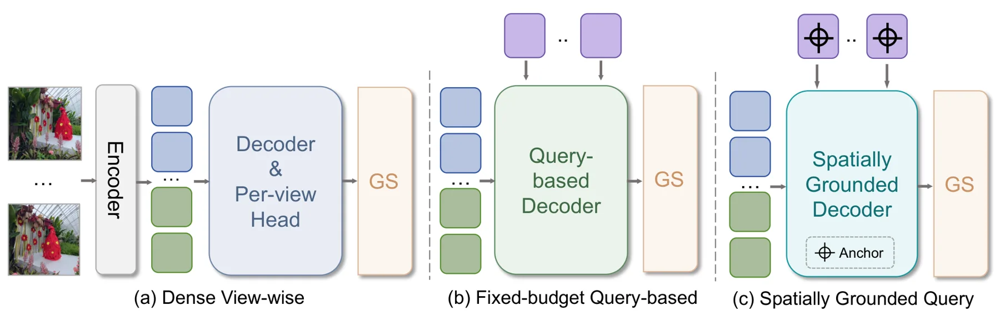
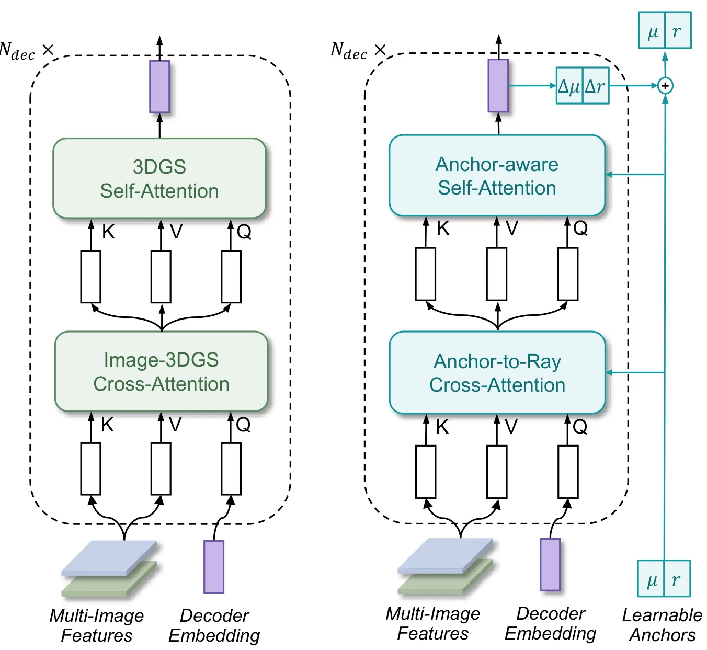
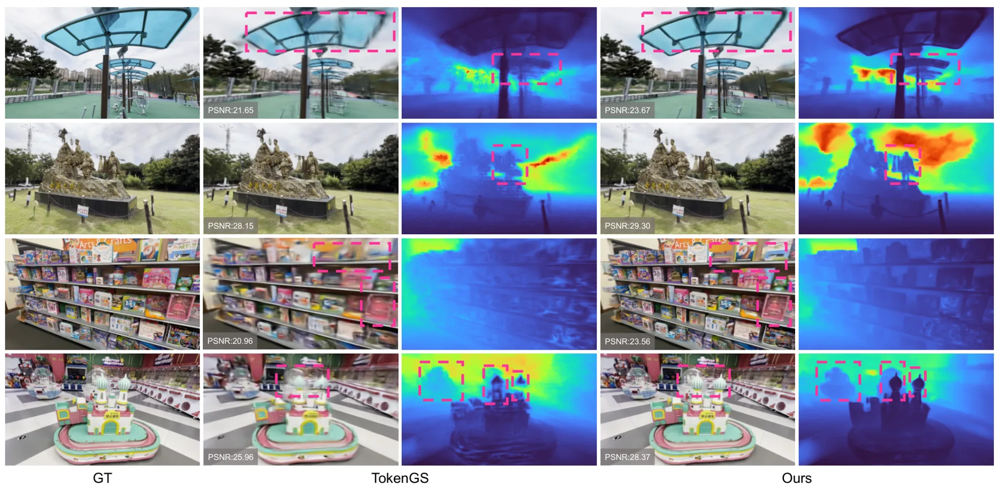
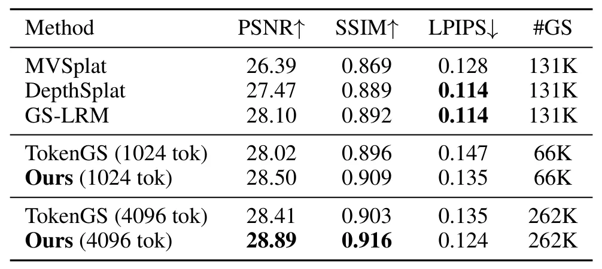
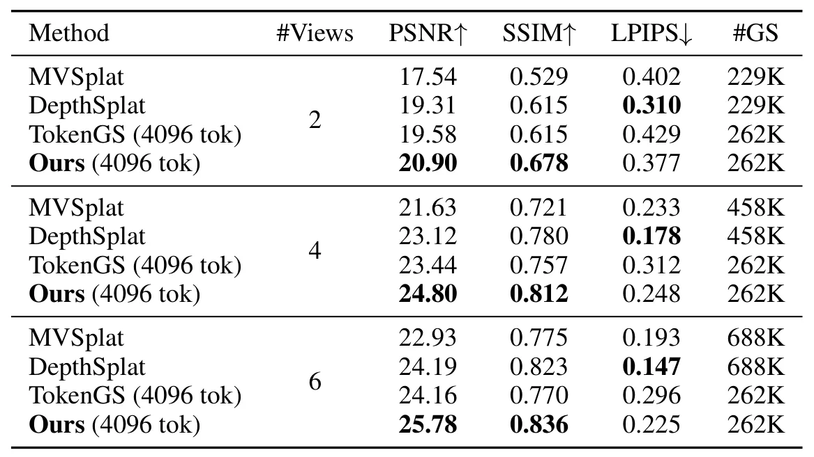

LocusGS：为空间一致的前馈式 3DGS 引入显式锚点状态LocusGS: Spatially Grounded Tokens for Feed-Forward 3D Gaussian Splatting
显式空间锚点直接处理前馈 3DGS token 的结构松散问题，设计清晰且控制了相同 Gaussian budget；当前证据主要是 NVS 渲染，是否改善几何、位姿或在线建图尚未证明。
一句话工作总结
给 Gaussian queries 绑定可逐层更新的三维中心与支持半径，使多视图证据聚合和 Gaussian 解码保持局部空间一致。
摘要
LocusGS 针对 query-based feed-forward 3DGS 中同一 query 生成的 Gaussians 分散到远距离场景区域、空间一致性弱的问题，为每个 Gaussian query 增加由 center 与 support radius 组成的 3D anchor state。该状态在 decoder layers 中逐步更新，并贯穿 query interaction、多视图 feature aggregation 和 Gaussian generation。anchor-to-ray geometric bias 把 query 引向空间相关的图像观测，anchor-centered decoding 则把其 Gaussians 组织在局部区域。摘要称在相同 Gaussian budget 下，LocusGS 的渲染质量优于 query-based Gaussian token baselines；学习出的 anchors 也形成更连贯的空间布局和更结构化的 Gaussian distributions。
Recent query-based feed-forward 3DGS methods represent a scene using learnable queries, each aggregating multi-view evidence and decoding a group of Gaussians. Ideally, different queries should specialize in coherent local regions of the scene. However, we observe that Gaussians decoded from the same query often scatter across distant scene regions, resulting in weak query-level spatial coherence and poor alignment with the scene structure. We attribute this behavior to the purely latent representation of existing Gaussian queries. To address this limitation, we introduce LocusGS, which augments each Gaussian query with a 3D anchor state consisting of a center and a support radius. The anchor state is progressively refined across decoder layers and is used throughout query interaction, multi-view feature aggregation, and Gaussian generation. Specifically, an anchor-to-ray geometric bias guides each query toward spatially relevant image observations, while anchor-centered decoding organizes its Gaussians within a local region. Experiments on novel view synthesis benchmarks show that LocusGS improves rendering quality over query-based Gaussian token baselines under the same Gaussian budget. Further analysis shows that the learned anchors form coherent spatial layouts and lead to more structured Gaussian distributions, demonstrating that explicit anchor states improve the spatial organization. Our project page: https://leo-frank.github.io/LocusGS_viewer.
中文解读摘录
- 价值：针对 query-based feed-forward 3DGS 中同一 query 生成的 Gaussians 散落在远距离区域的问题，为每个 Gaussian query 增加由 center 和 support radius 构成的 3D anchor state，使 token 与局部场景结构显式对齐。
- 方法与结果：anchor state 在 decoder layers 中渐进更新；anchor-to-ray geometric bias 引导 query 聚合空间相关的多视图观测，anchor-centered decoding 则约束局部 Gaussian 生成。摘要称在相同 Gaussian budget 下优于 query-based Gaussian token baselines，并形成更连贯的空间布局。
- 关注点：需检验 anchor 对稀疏视角、尺度变化、无纹理区域和动态内容的敏感性，及空间组织改进是否能转化为几何精度、位姿鲁棒性或在线建图收益，而不仅是 NVS 指标提升。
- 链接：arXiv · PDF · 项目页
图表/页面预览

{kind=link}

{kind=link}

{kind=link}

{kind=link}

{kind=link}
